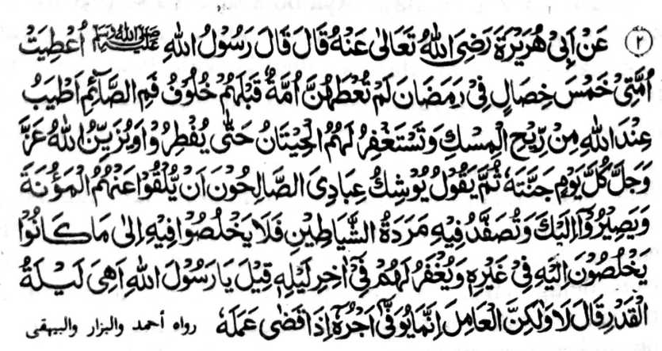
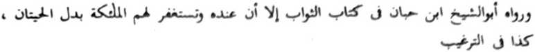

Hadith 2


Miyakathitayan ko Abu Hurairah (Radhiallaho ‘Anho) a pitharo iyan a pitharo o Rasulollah (Sallallaho ‘Alaihi Wasallam), “Inibegay ko Ummat aken so lima a pamemegayan si-i ko Ramadhan a daden a bigan non ko miyanga-oona a manga Ummat. (a) So sengaw a, pephakapo-on ko ngari o gi-i phowasa na mamot ko Allah (Subhaanaho Wa Ta’ala) a di so kastori; (b) Ipephamangeni siran o manga seda sa rila taman ko kapethangkas iran; (c) Go pephakilemba-an o Allah (Subhaanaho Wa Ta’ala) a Mabager ago Maporo ko oman gawi-i so Sorga oriyan niyan na gi-i Niyan non tharo-on: ‘Magadan den mapapas ko manga oripen Aken a phipiya-piya so manga tiyoba kiran sa donya na phakataros siran reka'; (d) Go papatongen so manga rarata a manga Shaitan ka an niran di pekhibodyok so [Miyamaratiyaya] sa lagid o kipembodyoka iran kiran igira, kena ba Ramadhan; (e) Go perila-an siran [a Miyamaratiyaya] langon ko mori-pori a gagawi-i niyan [a Ramadhan].” Pitharo iran [a manga Sahabah], “Ya Rasulollah! Ba giyanan so Lailatul Qadr?” Pitharo iyan, “Kena! Ogaid na so minggalebek na giyabo a kimbegan non ko balas iyan kagiya matarotop iyan so galebek iyan. ”
OSAYAN
So Rasulollah (Sallallaho ‘Alaihi Wasallam) na inaloy niyan sangka-iya Hadith so lima a pamemegayan o Allah (Subhaanaho Wa Ta’ala), a daden a bigan non ko [miphopowasa] manga miya-ona a manga ummat. Opama ka tanto tano a kiyababaya-an angka-iya a mala a limo o Allah (Subhaanaho Wa Ta’ala), na panamaran tano a tanto a kakowa a tano ron. Paganay ron, na miyatharo reketano a so sengaw a pephakapo-on ko ngari o gi-i phowasa a tao na tomo-on o Allah (Subhaanaho Wa Ta’ala) a di so kamot o kastori. So manga Olama na miyaloy siran sa walo a mapemama-ana angka-i. Ped si-i angka-iya telo a madakel a tomatarima-on a osayan.
a. So saba-ad na aya kepit iran non na sa Alongan a Mori, na so Allah (Subhaanaho Wa Ta’ala) na mbalasan Niyan angkoto a sengaw a pho-on ko ngari sa kamot a tanto a manayo ago mapiya a di so kastori. (Durre Manthur)
b. Si-i sa alongan a Qiyamah na phamanindeg tano ko manga Qobor tano, na aden a mamot a bao a phakapo-on ko manga ngari o siran a miyamowasa, a manayo a di so kastori.
c. Aya tapsir a tanto a mabager, ko katawi ko ron, na so kepit a si-i bo sangka-iya donya na so sengaw na tanto a manayo ko Allah (Subhaanaho Wa Ta’ala) a di so kastori. Giya-i tanda sa khampetan o babaya o Allah (Subhaanaho Wa Ta’ala) ago so oripen Niyan a gi-i mamowasa.
Katawan tano langon a apiya-i karominseng o sengaw o tao a tanto ngka pekhababaya-an na baden gi-i magomareg o babaya-a ka, a si-i na soden so Allah (Subhaanaho Wa Ta’ala). Aya mitotoro ini na so taman a karani ko Allah (Subhaanaho Wa Ta’ala) o tao a gi-i mamowasa. So powasa na isa ko tanto a manga pipiya ko manga “Ibaadah" sa pangilay-layan o Allah (Subhaanaho Wa Ta ala) go sabap si-i na aden a Hadith a pitharo iyan a so balas o omani simba na phagawidan o manga Mala-ikat, ogaid na pitharo o Allah (Subhaanaho Wa Ta’ala). “So balas o powasa, na Saken den-i mbegay ron, sabap sa pantag Raken bo.” Si-i ko isa a kiyapaka-okit angka-iya Hadith (opama ka batiya-a ko salakao a okit) na pitharo iyan, “Saken den-i balas iyan ” Antona-a pen-i makalawan sa kala a balas a kakowa-a o tao ko pekhabaya-an niyan? Si-i ko isa a Hadith, na miyabatiya tano ron: “So powasa na aya pinto o langowan a ‘Ibaadah’.” Aya ma-ana ini na misabap ko powasa a so poso na pekhasindao, na sabap si-i, na so babaya o tao ko kanggalebek sa simba na pekhaoyag. Aya bo a kakhakowa-a si-i na amay ka so powasa na titho a powasa, a matarotop so langowan a sarat (sa pagosa-in bo ko oriyana-i), sa kena ba giyabo a kiyapakagedam sa ongos ago kawaw.
THANODAN: Si-i sangka-i a darepa na malo aken mbangkiringen so inengka ko satiman a osayan. Sabap sangka-iya Hadith na so saba-ad ko manga ‘Imaam’ [balabao ron so Imaam Shafee] na inisapar iyan so kaosara ko Miswak igira miyapolid a alongan, ogaid na so Hanafi na piyakay niyan ko apiya antona-a wakto. Aya kepit angkoto a Imaam na sabap ko Miswak na pekhada so bao o sengaw, ogaid na so Hanafi na aya kepit iyan na so bao na si-i pephakapo-on ko tiyan a da-a ndodon, na daden a kitotompokon o manga ngipen.
Ika dowa a miyatindos a limo na so manga seda ko ragat na ipephamangeni ran sa rila sekaniyan a gi-i mamowasa. Aya antap si-i na so karinayag iyan sa so langowan a manga ka-aden a aden a niyawa niyan na ipephamangeni ran so tao. So bapa aken a, Maulana Muhammad Ilyas (Rahmatullahi Alaihi) na lalayon so gi-i niyan non katharo-a sa tantowa-i a marayag sabap sa so Allah (Subhaanaho Wa Ta’ala) na pitharo Iyan sa Qur’an ”Mata-an a so siran a Miyamaratiyaya ago minggalebek sa manga pipiya na thago-on kiran o Allah (Subhaanaho Wa Ta’ala) so babaya kiran [sangka-iya donya]” Isa a Hadith a rininayag iyan na-i: “Amay ka so Allah (Subhaanaho Wa Ta’ala) na kababaya-an Niyan angkoto a tao, na tharo-on Niyan ko Jibra’il, ‘Pekhababaya-an aken angkoto a tao, sa kababaya-i ngka sekaniyan.' Sabap ro-o na so Jibrail (‘Alaihis Salaam) na kababaya-an niyan angkoto a tao na pakalangkapen niyan ko manga langit: ‘Giyangkanan a tao na pekhababaya-an o Allah (Subhaanaho Wa Ta ala); sa kababaya-i niyo sekaniyan mambo.’ Sabap ro-o na so langon o ka-aden ko manga langit na kababaya-an niran angkoto a tao. Oriyan niyan, na so babaya sangkoto a tao na lomangkap sa donya. Aya kalalayaman na sobo so manga dadazeg ko tao na ayaon pekhababaya, ogaid na giya-i na so babaya on na pendayamang; apiya so manga palangga-langgam ko ipangalasan go so manga seda ko ragat na lagidoto mambo. Oriyan niyan na ipamangeni ran sekaniyan.
Aya ika telo a limo a inibegay ko gi-i mamowasa a tao na so “Sorga” na phelemba-an kiran. Satiman a Hadith a inaloy niyan a sangkoto a kasambi o bago a ragon, na so “Sorga” na pho-onan den lomemba pantag ko Ramadhan. Katawan tano a igira aden a pakatatalingoma-an a mala a tao, na tanto a mala a gi-i kapagiyasa-i ko kaphaka-oma niyan. Ibarat o kapangaroma, a phipira olan pen na kiyapagiyasa-an den. Lagidoto mambo so Ramadhan.
Ika pat a limo na so manga rarata a Shaytan na khirarantayan, sa aya rarad iyan na miyaka-ito so marata. Katawan den o tao a sabap sa kala a babaya o manga tao ko kanggalebek sa simba ko soled o bolan a Ramadhan, na so Shaytan na phanama-namaran niyan so kagawi-a niyan ko Miyamaratiyaya pho-on ko lalan a Ontol, ka aden aya manggola-ola iran na so Marata. Ogaid na kena ba giyoto-i miyanggola-ola ka baden miyaka-ito so gi-i manggola-ola a marata. Piraka tao a talainom sa arak-i miya-ilay tano a sabap ko babarakaten a olan-olan a Ramadhan na tomiyareg minom sa arak. Pira-i marata-i ongar a initareg iran pasin so marata a ola-ola si-i ko soled angkanan a babarakaten a olan-olan a Ramadhan. Aden a paka-iza si-i: kagiya rarantayan so “Shaytan” igira Ramadhan, ino bo aden a pekha-ilay tano a aden bo a pekhasogok a marata, inonta na baden maito? Aya sembag na so marata na khapakay a kena ba misabap ko marata a Shaytan. Sabap ko kiyapaginetao sa kape-phangongonotani ko kabaya ago bodyok o “Shaytan" ko soled o miyaka-sapolo ago isa olan-olan [ko da pen so Ramadhan], na so manga marata ola-ola a miyapamola iran na mimbaloy a ika dowa wara-an, na giyoto-i sabap a aden a marata a gi-i manggola-ola ko soled ago liyo o Ramadhan. Sabap si-i, na pekha-ilay tano siran a aya kalalayaman na gi-i nggola-ola sa marata na gi-i ran pen manggola-ola sa saba-ad ko manga rarata igira Ramadhan. Giyoto-i sabap a apiya rarantayan so Shaytan na so rarad iran na tanto a mabager sa pekha-onotan tano pen so okit iran a kabaya-baya tano a ginawa.
Isa pen a domada-it si-i a thanodan na so Rasulollah (Sallallaho ‘Alaihi Wasallam) na miyatharo iyan. ‘'Igira miyakasogok so tao sa satiman a dosa na satiman a maitem a daket a matago ko poso iyan; opama thaobata niyan sa ikhlas na maponason o di [niyan thaobata] na khatatapon. O madosa sekaniyan peman na satiman peman a daket a matago-on, taman sa maka-item langon so poso iyan. Oriyan niyan na daden a mapiya a makasoled ko poso iyan.” Maka-antap si-i na so Allah (Subhaanaho Wa Ta’ala) na pitharo Iyan sa Qur’an. “..Kena! ka badi kiyabongkosan so manga poso iran o nganin a piyanimo iran [a dosa]?” Giyoto-i sabap a so manga poso iran na langon mithangis; sa si-i sangkanan a betad, na giyangkanan a manga poso na si-i mitataliyadok ko manga dosa. Giya-i sabap ino aden a manga tao a da a kalek iran ko kasogoka ko mapepento a dosa ogaid na o aya niyan khasogok so salakao a dosa a melagid sa kapened (ago giyangkoto a di ran kharao somogok) na so manga poso iran na di ran khatarima [o ba iran sogoka]. Ibarat iyan na so siran a talainom sa arak na o ba tharo-a kiran a kan siran sa baboy na di ran khababaya-an, inangin o giyangka-iya a dowa dosa na melagid sa kapened. Sakamaoto mambo a o so dosa na lalayon pekhasogok igira kena ba Ramadhan, na minitatak oto ko poso, sa giyoto-i aya inionga niyan na pekhasogok iran pen angka-iya a manga dosa apiya di makadadarepa so Shaytan. Aya pamikiran aken non na kena ba so langon o manga Shaytan na ba langon riyantayan, so bo so titho kiran a manga rarata. Langon tano pekha-ilay a igira Ramadhan na tanto a malebod so kanggalebek sa mapiya a Amaal. Kena pen o ba tanto a maregen a kapi-isi ko ginawa misabap ko kapalagowi ko marata, sa lagid [o karegen niyan] igira salakao a masa. So Maulana Shah Ishaaq (Rahmatullahi ‘Alaihi) na aya pamikiran niyan non, na so siran a manga rarata-i ongar a manga tao na so bo so titho den a marata a Shaytan na aya riyantayan kiran, ogaid na so siran peman a manga barasimba na so langon o Shaytan na langon kiran riyantayan.
Ika lima a limo na so rila na imbegay [o Allah (Subhaanaho Wa Ta’ala)] ko mori a gagawi-i ko Ramadhan (ilaya niyo so miya-ipos a Hadith); na sabap sangka-iya a mala a limo na so manga Sahabah na aya kiyapikira iran non na ba giyoto so ‘Lailatul Qadr’; Katawan niran so kala a limo angkoto a kagagawi-i sa minisabapon a kini-izaan niran non o ba aya mitotoro-oto na so Lailatul Qadr. Aya sembag kiran na kena. Matag-a-i limo a inibegay pantag ko kiyazela-selaa ko Ramadhan taman ko kiyapopos iyan.